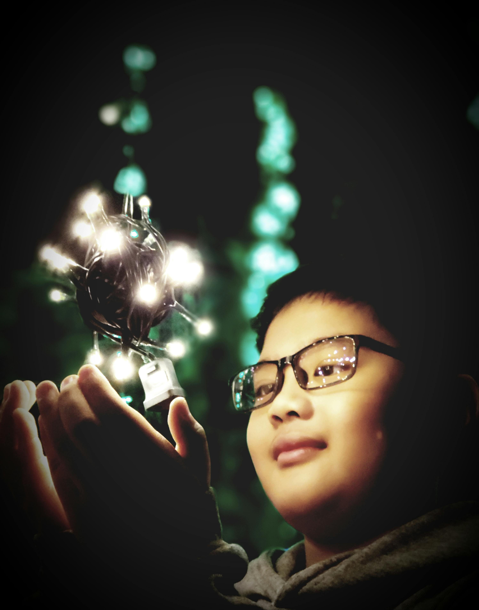
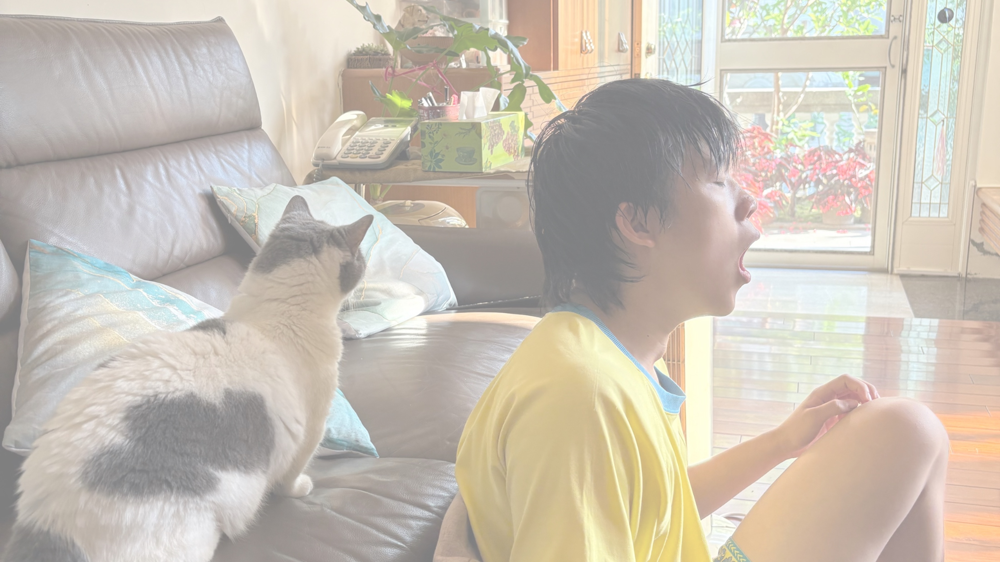
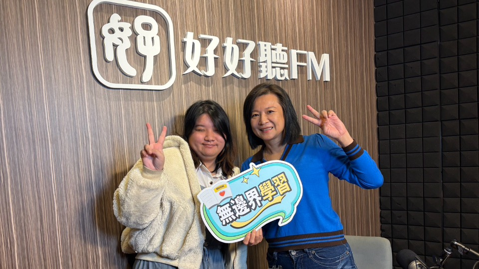
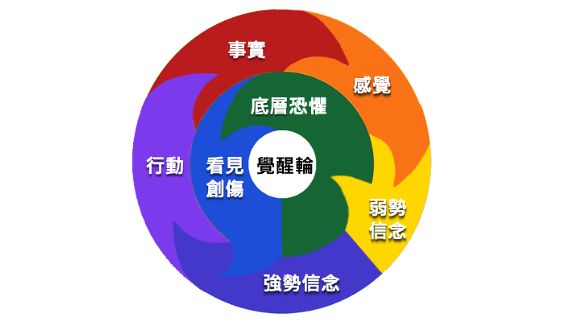

薇閣國小家長講座
陪孩子
找到未來的光
不確定的時代
更需要清楚的內在方向
今天，我想和大家聊聊，在 AI 時代，我們還能怎麼陪孩子長大。

薇閣國小家長講座
不確定的時代
更需要清楚的內在方向
今天，我想和大家聊聊，在 AI 時代，我們還能怎麼陪孩子長大。
江宜汾｜教育工作者・媒體人・家長
如照片所示
身為媒體人的我
因為孩子步入青少年
我開始關心教育

AI 時代的家長提問
我還能給孩子
什麼？
答案變多了，孩子反而更需要有人陪他想清楚：我怎麼看？我要怎麼選？
現場互動
對孩子是幫助
還是威脅？
請掃描 QR Code
家長的共同期待
所有選擇背後
家長正在感受到的距離
我最擔心的是，孩子一路把事情做好，卻越來越不知道自己怎麼想。
延伸聆聽
未來那麼快
我們到底該先陪孩子準備什麼？

高功能孩子的困境
不一定知道
自己要什麼
努力，有時候只是為了不讓父母失望。
3C 與社群媒體
天下雜誌案例
他們很優秀
但很多人還沒練習過自己找方向。
資料來源：天下雜誌／Cheers 編輯部，〈當台大生不再做夢：為何身為頂尖菁英的他們，卻對未來感到更加迷茫？〉，2026-05-07，https://www.cw.com.tw/article/5140949
當人生沒有標準答案
卻未必練習過
為自己做選擇
李中莹｜專家觀點
孩子要練習
自己想、自己選
當答案愈來愈容易取得
只會照做
會越來越不夠
現在的教育方式
去解決未來的問題
便利貼活動 1
你希望他
成為什麼樣的人？
先暫時放下成績、學校和職業，只看見孩子未來的生命狀態。
生命狀態的關鍵詞
便利貼活動 2
你最希望孩子
具備哪些能力？
我們把期待說清楚一點：希望孩子以後遇到事，靠什麼走下去？
未來能力的關鍵詞
如果世界變得不可預測
是遇到變化時
心裡有東西撐住自己
能力的提醒
在學校裡面
不見得有教
MIT Sloan Research Paper No. 7236-24
MIT 的研究提醒我們：有些能力，AI 越強，反而越重要。
資料來源：Isabella Loaiza & Roberto Rigobon, “The EPOCH of AI: Human-Machine Complementarities at Work,” MIT Sloan Research Paper No. 7236-24, November 21, 2024；MIT Sloan press release, March 17, 2025.
小組討論 3–5 分鐘
會讓孩子比較敢想
敢選，也比較撐得住挫折？
從討論收斂
是在每天的相處裡
一點一點養起來的
關鍵轉折
少一點推著走
多一點聽孩子怎麼想
AI 給得出答案，但孩子被理解、被好好聽見，還是只能來自真實的人。
EPOCH 1
孩子先被理解
才學會理解別人
EPOCH 2
陪伴有時候很短
但那一刻你真的在
EPOCH 3
有討論的家庭
才會養出有觀點的孩子
EPOCH 4
創造力
來自安全感
EPOCH 5
陪孩子
把夢想說清楚
回到開場的問題
父母能給孩子的
是信任與支持
我們不用替孩子把人生排好。孩子需要知道的是：勇敢去闖吧，因為就算跌倒，我們都在。
最重要的一句
孩子才有安全感
為自己的人生負責
家長覺醒圈
很多時候
從父母的覺察開始

真正的改變
可以包容接納
真實的自己
就能給孩子更完整的愛。
延伸連結
也陪自己
一起學習
加入 LINE OA，收到講座延伸資源；也歡迎收聽「無邊界學習」，一起思考 AI 時代的教育與親子陪伴。
陪伴孩子找到未來的光
我們不用幫孩子把路走完
只要讓他知道，可以一步一步走。